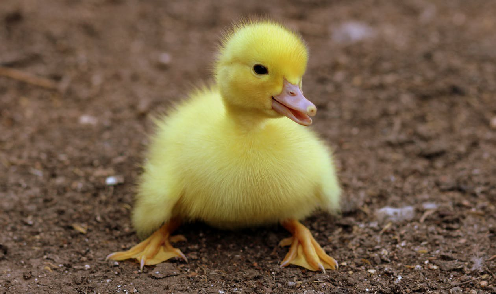

Lesson 10
UNIT 2
My specialty is techologist
BASIC LIVESTOCK PRODUCTION

Poultry keeping
Learn the active vocabulary of the Lesson and be ready to
use it in your further work:
Cock
n , rooster – півень; chicken
n , hen – курка; chick
n – курча; cockerel
n , young roster – молодий півень; broiler
n – бройлер; poultry
keeping – птахівництво; poultry
keeper – птахівник; poultry
farm – пташина ферма; poultry
house – пташина ферма; to
lay eggs – нести яйця; turkey
n – індичка; goose
n (geese) – гуска (гуси); duck
n – качка; duckling
n – каченя; consumption
n – споживання; broiler
n – бройлер; wire
cage – дротяна клітка; tier
n – ярус; nearideal
conditions – близькі до ідеальних умов; latter
condition – остання умова; farm
flock – фермерський табун,
зграя; weed
control – боротьба з бур'янами; litter
floor – підстилка; feather
n – пір'їна; ostrich
n – страус; pigeon
n – голуб; squab
n – голубеня; breeds
of poultry – породи сільськогосподарської птиці; fowl
n – птах
Read
and translate the text: POULTRY Poultry
are kept; for flesh and eggs. They include hens with chicken, turkeys,
cocks,
ducks with ducklings and geese with goslings. The
breeds of poultry are numerous. There are no teeth in the mouth of the fowl, the
food is swallowed whole so the fowl is able to digest its food and absorb the
nutrients
much more rapidly than other farm stock. Poultry
Farming is commercial rising of chickens, turkeys, ducks, and geese for their
meat and eggs. Since the 1930s and 1940s, the poultry industry has become one of
the most efficient producers of protein for human consumption. It expanded
rapidly during World War II because of the shortage of beef and pork, which
require a much longer time to develop; only seven weeks are required to produce
a broiler and five months to produce a laying hen. Chickens
Today
more than 85 percent of the laying hens are housed in wire cages containing from
two to ten hens each. The cages may be in a single tier or in tiers of up to
five cages. Most of these are automated to provide a constant supply of feed and
water
and to maintain control of the environment. With temperatures remaining at
nearideal conditions, the birds never suffer frozen feet. Mortality is
consistently lower than in the times when hens were mainly housed on a litter
floor, where they were constantly in contact with one another and with feces;
the latter condition also required more antibiotics and drugs to prevent
disease. Turkeys
The
turkey industry began to develop on a larger scale in the late 1930s and early
1940s and has since grown rapidly. At first the birds were grown on ranges, but
disease problems forced farmers to raise them on wire platforms. This proved
costly and labor inefficient, so when controls were found for the diseases,
turkey farms returned to the use of ranges or large houses Geese
Most
geese are produced in small farm flocks of up to a few hundred; few large
operations
exist. The birds are hardy and are usually grown on ranges, where they are
good
foragers and require little care after the first two or three weeks. Goose
remains a specialty food, but the demand for goose down has increased in recent
decades. The birds themselves are sometimes used by farmers for weed control.
GRAMMAR
EXERCISES
I.
Answer the following questions:
1.
What is the most popular poultry raised in the USA? 2.
Why has poultry industry become one of the most efficient producers of
protein for human consumption? 3.
How much time is required to produce a broiler or a laying hen? 4.
What is the result of modern technological development of poultry industry?
5.
What conditions are provided for raising hens? 6.
Why does the use of cages provide greater comfort than litter floors?
7.
When did the turkey industry begin to develop? 8.
Where were the birds grown at first? 9.
What do you know about the geese producing? II.
Remove suffixes in the following words, translate them and tell what part of the
speech they belong to:
Include,
including, inclusion, inclusive; numerate, numeral, numerable,
numerator, numeration, numerous, numerously, numerical, numerically; absorb,
absorbent, absorber, absorbing, absorption; digest,
digester, digesibilityt, digestible, digestion, digestive; commercial, commerce,
commercialese, commercialism, commercialize;
III.
Give antonyms to the following words:
Include,
numerous, swallowed, rapidly, commercial, efficient, shortage, develop, another,
frozen, mortality, lower, prevent, large, after, sometimes,
control.
IV.
Find a common word:
a)
chickens, turkeys, ducks, fowl, geese; b)
chick, turkey poult, duckling, goosling, baby bird, chick ostrich,
squal; c)
hen, turkey, duck, dame (goose), hen ostrich, hen pigeon, female bird;
d)
rooster, gobbler, drake, gander, male bird, cock ostrich, cock pigeon.
V. Match domestic birds with their corresponding definitions:
VI. Find correct Ukrainian equivalents in the right column:
VII. Give the forms of the Present, Past, Future (Indefinite) Tenses of Active and Passive Voices:
a)
to regulate, to smile, to hope, to help, to learn, to stop, to plan, to visit,
to offer, to prefer, to discuss, to study, to enjoy, to play, to cry;
b) to be, to have, to do, to go, to sit, to begin, to become, to make, to eat, to teach, to write, to leave, to tell, to think, to take, to get, to buy, to read, to say, to bring, to forget, to pay.
VIII. Make the following sentences interrogative and negative:
1.
You should examine birds for good health.
2.
With experience, you can see general good health in a bird.
3.
The male should be attentive to the females and court them from time to time,
without bullying.
4.
Birds should have clear, bright eyes, have a red comb without any blue edges,
and the birds should be bright and alert.
5.
Nostrils should be clear of mucus and breathing without any
wheezing.
6. Check for lice, especially around the vent and under the wings.
IX. Read the text and answer the questions:
1.
What are the two methods of hatching?
2.
What types of incubators do you know?
3.
What eggs should be chosen for incubation?
4.
Is the temperature in incubators regulated automatically?
5.
How may chickens be reared?
6.
When are cockerels separated from pullets?
7.
What are chickens given after hatching?
8.
What is the most common method of feeding chickens?
9.
What is a broiler?
10. What is the way of achieving high-quality broiler meat?
HATCHING
AND CHICKEN REARING
There
are 2 main methods of hatching: the natural method, that is, by means of a
broody hen and the artificial one by means of incubators.
Incubators
may be of the hot-air or hot-water type. Care should be taken in the selection
of eggs for incubation. They should be of average size and proper shape. Neither
badly shaped eggs nor those with very rough or thin shells should be chosen.
Eggs for incubation should be clean and as fresh as possible. They should never
be kept for longer than one week before setting. The fresher are the eggs the
better, since the percentage of hatching will be higher in this case. The
temperature and humidity in incubators are regulated automatically. It is
important that ventilation should be provided.
Chickens
may be reared either by a broody hen or in various types of brooders. Battery
brooders are widely used on big poultry – breeding farms because of their being
adapted for large – scale rearing over a long period. They consist of a series
of compartments one on top of the other and all are heated by the same heating
apparatus.
Being
8 weeks old, cockerels are to be separated from pullets and if they are not to
be kept for breeding purposes, they should be fattened up. The pullets are
removed to their permanent laying quarters when they are 4 to 5 months old.
No
food is required for chicks for chicks for 24 hours after hatching. But they
should be given warm water or milk and fine grits. Many different systems of
feeding chicks are practiced. The most common and successful one is to feed dry
mash in hoppers opened all day long or shut periodically. In addition 2 feeds of
grain are given to them, one in the morning and the second in the evening. It is
necessary that chicks should have a free access to water as well.
Young meat chickens at about 6 or 7 weeks are referred to as “broilers”. The quality of meat at this stage is excellent. High-quality broiler meat is achieved due to their being fed high-protein or high-energy rations.
X. Choose the right answers:
1.Poultry
are kept for…
a)
meat
b)
flesh and eggs
2.The
breeds of poultry ...
a)
are numerous.
b)
aren't numerous.
3....
teeth in the mouth of the foul.
a)
There are ten
b)
There are no
c)
There are some
4.
The heart of the fowl beats ...
a)
slower.
b)
quicker.
5.
The respiration is ...
a)
more rapid.
b)
less rapid.
6.
The fowl as able to digest its food and absorb the food nutrients are ... than
other farm stock.
a)
slower
b) much more rapidly